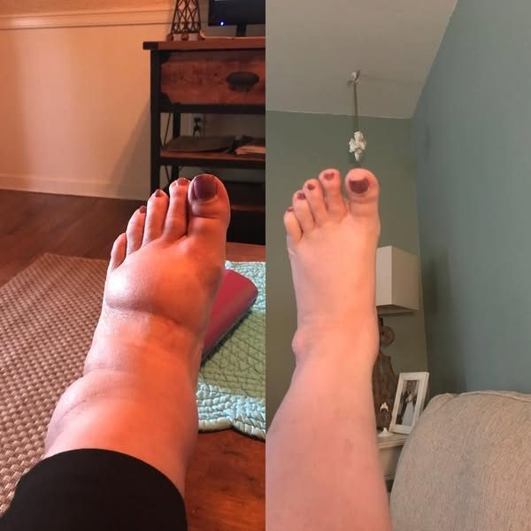
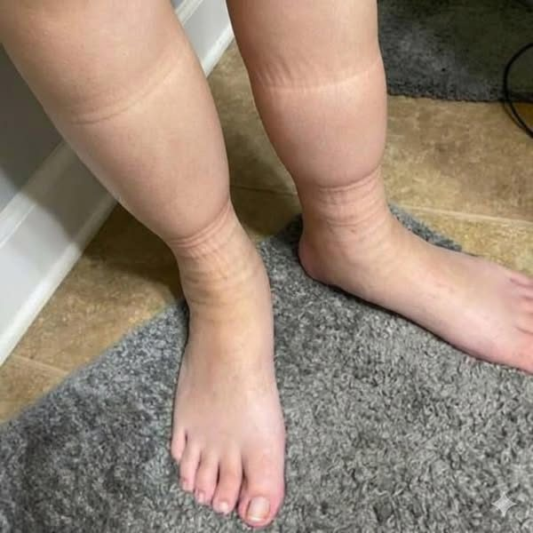
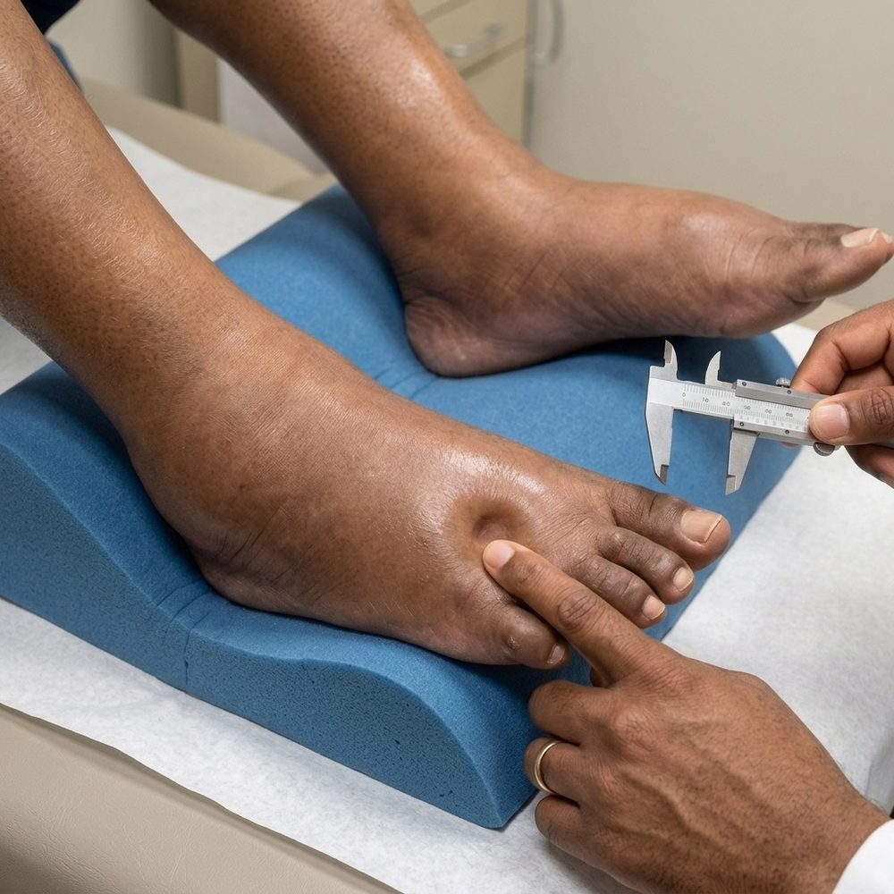
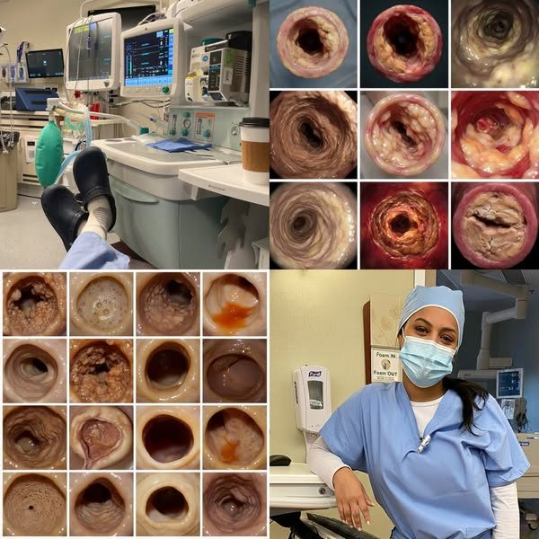
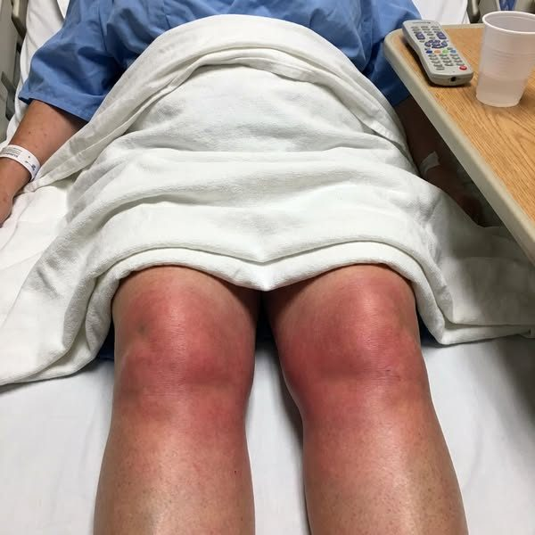
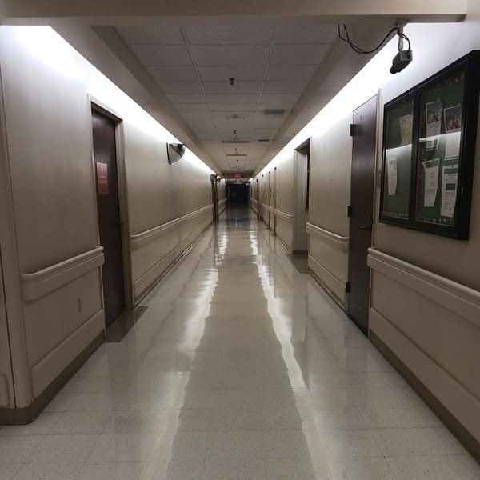
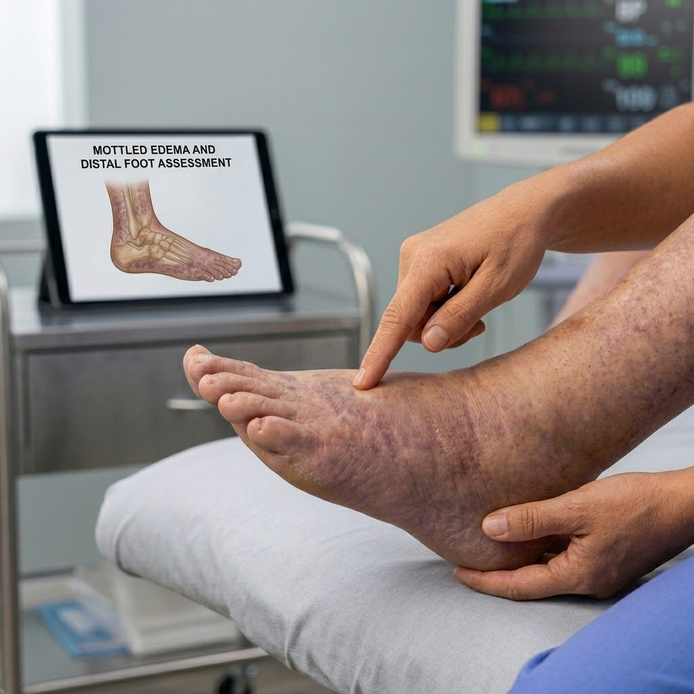
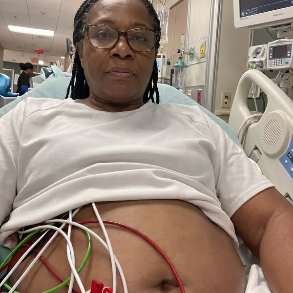
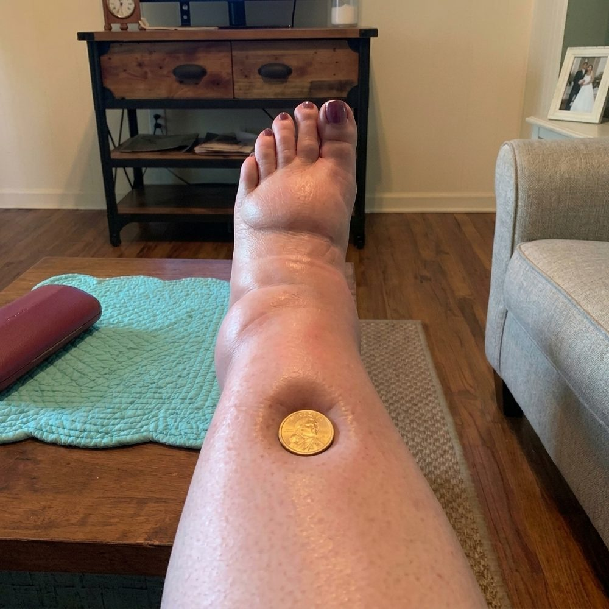

I've been a vascular specialist for 19 years. Last year a 71-year-old physical therapist taught me more about swollen legs in 30 minutes than two decades of practice.
My own legs had ballooned. Compression, water pills, elevation — nothing worked. Then Dr. Costa pressed his thumb into my ankle: the dent stayed 8 seconds. "Normal fluid springs back in 1-2 seconds. That's not a leg problem, that's a deep drainage problem showing up in your legs."
He explained the body's second drainage system — clogged by sludge that compression, pills and massage never touch. Only a specific 4-extract liquid ritual, taken under the tongue, clears it in four stages.
Week 8: pitting test down from 8.2 to 2.1 seconds. Ankle circumference down 1.3 inches. I could see my ankle bone again.
Sou especialista vascular há 19 anos. No ano passado, um fisioterapeuta de 71 anos me ensinou mais sobre pernas inchadas em 30 minutos do que duas décadas de prática.
Minhas próprias pernas tinham inchado. Compressão, diuréticos, elevação — nada funcionava. Aí o Dr. Costa pressionou o polegar no meu tornozelo: a marca ficou 8 segundos. "Fluido normal volta em 1-2 segundos. Isso não é problema na perna, é um problema de drenagem profunda aparecendo na perna."
Ele explicou o segundo sistema de drenagem do corpo — entupido por uma "lama" que compressão, diuréticos e massagem nunca tocam. Só um ritual líquido específico de 4 extratos, sob a língua, limpa isso em quatro etapas.
Semana 8: teste de pressão caiu de 8,2 pra 2,1 segundos. Circunferência do tornozelo caiu 3,3 cm. Voltei a ver o osso do tornozelo.

My older sister had swollen legs. A heart attack took her seven months ago. She was 61. I have the same swelling, same daily water pill, same ankles that vanish by 5pm.
After the funeral I went looking for what actually took her. Chronic fluid backing up in the legs isn't just a leg problem — it's the body's second drain failing, and the strain lands on the heart and kidneys. The water pill never touches that drain.
I found a 30-second morning ritual: 4 plant extracts under the tongue that break down stalled fluid, sweep it out, activate circulation, and purify the blood.
Month 2 follow-up: blood pressure down 20 points, swelling better than in years. My doctor said, "keep doing what you're doing."
Minha irmã mais velha tinha as pernas inchadas. Um infarto a levou há sete meses. Ela tinha 61 anos. Eu tenho o mesmo inchaço, o mesmo diurético diário, os mesmos tornozelos que somem às 17h.
Depois do funeral, fui atrás do que realmente a matou. Fluido acumulado nas pernas por anos não é só um problema de perna — é o segundo dreno do corpo falhando, e a sobrecarga vai pro coração e pros rins. O diurético nunca toca esse dreno.
Achei um ritual matinal de 30 segundos: 4 extratos vegetais sob a língua que quebram o fluido parado, varrem pra fora, ativam a circulação e purificam o sangue.
Retorno no mês 2: pressão caiu 20 pontos, inchaço melhor do que em anos. Minha médica disse: "continue fazendo o que está fazendo."

My older sister had a routine vein surgery for her swollen legs. She died of a blood clot three weeks later. She was 59. Now the same surgeon wants to schedule me for the same operation.
I cancelled it. When the body's second drain is already sluggish, the weeks after leg surgery are the most dangerous window there is — the perfect conditions for a clot. Nobody warned Diane. Nobody warned me.
Instead of the knife, I found a 30-second morning ritual: 4 plant extracts that support the drain itself instead of cutting around it.
Month 2: my doctor took the surgery referral off the table. Month 4: legs steady all day, pressure in the low 120s, no surgery, just the drops.
Minha irmã mais velha fez uma cirurgia de varizes de rotina pras pernas inchadas. Morreu de um coágulo três semanas depois. Tinha 59 anos. Agora o mesmo cirurgião quer marcar a mesma operação pra mim.
Cancelei. Quando o segundo dreno do corpo já está lento, as semanas depois de uma cirurgia na perna são a janela mais perigosa que existe — condição perfeita pra um coágulo. Ninguém avisou a Diane. Ninguém me avisou.
Em vez do bisturi, achei um ritual matinal de 30 segundos: 4 extratos vegetais que sustentam o próprio dreno em vez de cortar ao redor dele.
Mês 2: minha médica tirou o encaminhamento cirúrgico da mesa. Mês 4: pernas estáveis o dia todo, pressão na faixa dos 120, sem cirurgia, só as gotas.

My nurse-practitioner daughter married into an Amish family in Lancaster County. At the wedding, the groom's 84-year-old great-grandmother stood up and said something my family hasn't forgiven her for.
"You are 58. I am 26 years older. When you arrived you braced your hand on my porch rail to stand. Somebody did that to you. It was not God, and it was not time." She told the story of a cousin who left the community, went on a water pill for years, and died at 62 — heart gave out, chart always "stable."
My daughter later explained: the water pill forces the kidneys to dump water, it never touches the drainage. Every Amish farmhouse keeps drainage botanicals the women take year-round — 4 plant extracts, drops under the tongue before coffee.
Month 4: 33 pounds of fluid weight gone, pressure in the low 120s, ankles steady, wedding ring fits again.
Minha filha, enfermeira, casou com uma família Amish em Lancaster County. No casamento, a bisavó do noivo, 84 anos, se levantou e disse algo que minha família ainda não perdoou.
"Você tem 58. Eu tenho 26 anos a mais. Quando você chegou, se apoiou no meu corrimão pra ficar de pé. Alguém fez isso com você. Não foi Deus, e não foi o tempo." Ela contou a história de uma prima que saiu da comunidade, tomou diurético por anos e morreu aos 62 — coração parou, exames sempre "estáveis".
Minha filha depois explicou: o diurético força os rins a eliminar água, nunca toca a drenagem. Toda fazenda Amish mantém botânicos de drenagem que as mulheres tomam o ano todo — 4 extratos vegetais, gotas sob a língua antes do café.
Mês 4: 15 kg de retenção de líquido eliminados, pressão na faixa dos 120, tornozelos estáveis, aliança de casamento voltou a servir.
My daughter moved trapped fluid out of a sponge better than a prescription water pill. She's 11. It was a science fair project — 5 sponges, 5 liquids. The water pill sponge stayed heavy overnight. One sponge drained almost dry.
The judge was a retired vascular nurse of 31 years. Her hands were shaking. "A water pill doesn't move fluid out of the tissue, it just forces the kidneys to dump water from the blood. That's why ankles come back by evening no matter how many pills you take."
Cup five, the one that drained, was a cold-pressed extract I take every morning — 4 plant extracts that support the body's second drain instead of forcing the kidneys.
My numbers 8 months in: pressure 122/80, ankles normal all day, the swelling that defined my evenings for years — gone.
Minha filha tirou mais fluido preso de uma esponja do que um diurético prescrito. Ela tem 11 anos. Foi um projeto de feira de ciências — 5 esponjas, 5 líquidos. A esponja com o diurético continuou encharcada de manhã. Uma esponja quase secou.
A juíza era uma enfermeira vascular aposentada com 31 anos de carreira. As mãos dela tremiam. "Um diurético não tira fluido do tecido, só força os rins a eliminar água do sangue. Por isso os tornozelos voltam a inchar à noite, não importa quantos comprimidos você tome."
O copo cinco, o que drenou, era um extrato prensado a frio que tomo todo dia — 4 extratos vegetais que sustentam o segundo dreno do corpo em vez de forçar os rins.
Meus números depois de 8 meses: pressão 122/80, tornozelos normais o dia todo, o inchaço que definia minhas noites por anos — sumiu.

I Refused a Second Water Pill for 3 Years. Here's What Happened to My Swollen Legs. I've been a nurse for 30 years — Evelyn, 67, "stable" chart, 18 years on a water pill, died buying cantaloupe.
My own ankles started going. My doctor offered a second pill. I refused and started researching why Amish women in Lancaster County almost never get chronic leg swelling — a fraction of the surrounding counties.
The old books named 4 botanicals the modern research keeps landing on: Stillingia Root, Cleavers, Prickly Ash Bark, Red Clover — cold-processed, in sequence, not heat-dried dust like drugstore versions.
Week 10: pressure 120/78, down from 146/92. Resting heart rate down from 84 to 67. My doctor: "Whatever you're doing, keep doing it."
Recusei um segundo diurético por 3 anos. Veja o que aconteceu com minhas pernas inchadas. Sou enfermeira há 30 anos — Evelyn, 67 anos, exames "estáveis", 18 anos de diurético, morreu comprando melão no mercado.
Meus próprios tornozelos começaram a inchar. Minha médica ofereceu um segundo comprimido. Recusei e comecei a pesquisar por que as mulheres Amish de Lancaster County quase nunca têm inchaço crônico nas pernas — uma fração dos condados vizinhos.
Os livros antigos citavam 4 botânicos que a pesquisa moderna também aponta: Raiz de Stillingia, Cleavers, Casca de Prickly Ash, Trevo Vermelho — processados a frio, em sequência, não o pó ressecado por calor dos suplementos de farmácia.
Semana 10: pressão 120/78, caindo de 146/92. Frequência cardíaca de repouso caiu de 84 pra 67. Minha médica: "O que você está fazendo, continue fazendo."

I read a statistic that made me sick: chronic leg swelling that goes unmanaged is one of the most overlooked warning signs of heart trouble in women. My mother had it for 18 years, a heart attack took her at 62.
I'm 58, same swelling since 47. My doctor offered a second pill and a heart workup. I refused and found the same answer that turned my mother's story around too late: the water pill masks the heaviness, so you move less, and less movement drains the strength that holds you up as you age.
I found a 30-second morning ritual — 4 plant extracts under the tongue that support the drainage instead of masking it.
Week 4: walked a full block, no rail, no furniture to grab. Month 2: no second pill, no workup. I carry my own groceries now.
Li uma estatística que me deixou mal: inchaço crônico nas pernas sem tratamento é um dos sinais de alerta mais ignorados de problema cardíaco em mulheres. Minha mãe teve isso por 18 anos, um infarto a levou aos 62.
Tenho 58 anos, mesmo inchaço desde os 47. Minha médica ofereceu um segundo comprimido e uma bateria de exames do coração. Recusei e encontrei a resposta que chegou tarde demais pra minha mãe: o diurético mascara o peso nas pernas, então você se movimenta menos, e menos movimento drena a força que sustenta você com a idade.
Encontrei um ritual matinal de 30 segundos — 4 extratos vegetais sob a língua que sustentam a drenagem em vez de mascará-la.
Semana 4: caminhei um quarteirão inteiro, sem corrimão, sem me apoiar em móveis. Mês 2: sem segundo comprimido, sem bateria de exames. Hoje carrego minhas próprias compras.

I'm a lymphatic therapist. 12 years. You cannot drain a leg from the outside for good — massage, compression, elevation, all of it works for hours, none of it holds. Then I spent 2 weeks in an Adriatic fishing village where women on their feet all day into their 80s almost never get swollen legs.
Ana, 92, laughed when I asked. She told me about a sister who left the village, dropped the family remedy, and died at 68 of a "stable" heart. Then she handed me a dark jar — a blend of drainage botanicals her mother and grandmother made by hand.
Back home, it matched the research exactly: 4 plant extracts, cold-processed, the same sequence used in the clinical studies — not the heat-dried dust sold at drugstores.
Week 4: legs steady all day, resting heart rate down into the 60s. Month 2: blood pressure down 20 points.
Sou terapeuta linfática. 12 anos. Você não drena uma perna de fora pra sempre — massagem, compressão, elevação, tudo funciona por horas, nada se mantém. Aí passei 2 semanas numa vila de pescadores no Adriático, onde mulheres em pé o dia todo até os 80 anos quase nunca têm pernas inchadas.
Ana, 92 anos, riu quando perguntei. Contou de uma irmã que saiu da vila, abandonou o remédio da família e morreu aos 68 com o coração "estável". Depois me entregou um pote escuro — uma mistura de botânicos de drenagem que a mãe e a avó dela faziam à mão.
De volta pra casa, batia exatamente com a pesquisa: 4 extratos vegetais, processados a frio, na mesma sequência dos estudos clínicos — nada a ver com o pó ressecado vendido em farmácia.
Semana 4: pernas estáveis o dia todo, frequência cardíaca de repouso caiu pra faixa dos 60. Mês 2: pressão caiu 20 pontos.

My older sister couldn't sleep because of her legs. A heart attack took her last winter. She was 64. I have the same problem — legs so heavy and restless at night I can't get comfortable, same water pill, same "your numbers look fine."
What I found: heavy, restless legs at night are often fluid pooling because the drainage system runs slow, and lying down it has nowhere to go. The sleep problem, the swelling, and the creeping pressure were never three separate problems — one system failing quietly.
A 30-second morning ritual — 4 plant extracts under the tongue that support the drainage instead of just offloading the blood.
Week 4: sleeping 6.5 hours, no waterlogged heaviness. Month 2: 126/80, doctor held the second pill and the workup.
Minha irmã mais velha não conseguia dormir por causa das pernas. Um infarto a levou no inverno passado. Ela tinha 64 anos. Eu tenho o mesmo problema — pernas tão pesadas e inquietas à noite que não consigo ficar confortável, mesmo diurético, mesmo "seus exames estão bons".
O que descobri: pernas pesadas e inquietas à noite costumam ser fluido acumulado porque o sistema de drenagem está lento, e deitada, ele não tem pra onde ir. O problema do sono, o inchaço e a pressão subindo nunca foram três problemas separados — um único sistema falhando silenciosamente.
Um ritual matinal de 30 segundos — 4 extratos vegetais sob a língua que sustentam a drenagem em vez de só descarregar o sangue.
Semana 4: dormindo 6h30, sem aquela pesadeira encharcada. Mês 2: 126/80, a médica segurou o segundo comprimido e a bateria de exames.

My older sister had swollen legs and puffy hands for years. Her kidneys failed at 60. She spent her last two years on dialysis. She died at 62. I have the same swelling, same daily water pill, same "your labs are basically fine."
Chronic swelling is the body telling you the drainage has slowed. A water pill forces the kidneys to dump water over and over — for some women, that pressure is exactly what wears the kidneys down.
I found a gentler path: 4 plant extracts under the tongue that support the drainage itself, no forcing, no all-night bathroom trips, no extra strain on the kidneys.
Month 2: labs held steady, doctor held the second pill — "gentle is better for your kidneys anyway." I'm off dialysis. Susan is not.
Minha irmã mais velha teve pernas inchadas e mãos inchadas por anos. Os rins dela falharam aos 60. Passou os últimos dois anos em diálise. Morreu aos 62. Eu tenho o mesmo inchaço, o mesmo diurético diário, o mesmo "seus exames estão basicamente normais".
Inchaço crônico é o corpo avisando que a drenagem está lenta. Um diurético força os rins a eliminar água repetidamente — em algumas mulheres, é exatamente essa pressão que desgasta os rins.
Encontrei um caminho mais suave: 4 extratos vegetais sob a língua que sustentam a própria drenagem, sem forçar, sem idas ao banheiro a noite toda, sem sobrecarregar os rins.
Mês 2: exames estáveis, a médica segurou o segundo comprimido — "suave é melhor pros seus rins de qualquer forma." Estou fora da diálise. A Susan não está.